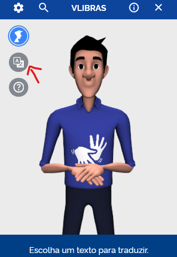

Como funciona?
VLibras é uma ferramenta que permite traduzir textos do português para a Língua Brasileira de Sinais (Libras). Nesta página, você aprenderá como utilizar o software VLibras e poderá testar a tradução de palavras e frases.
Como Utilizar o VLibras
-
Abrindo o aplicativo
Para utilizar o VLibras, primeiro clique no botão azul localizado no centro do lado direito da tela.
O assistente da Vlibras se apresentará, em seguida você poderá utilizar o sistema livremente.
-
Traduzir Texto
Com a extensão ativa, selecione o texto que deseja traduzir e clique com o botão esquerdo do mouse em cima do texto que você gostaria de trauzir.
Você tambem pode traduzir qualquer tipo de texto utilizando a função "tradutor"
